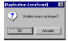

- La phase de conception et ses éléments
- Les parties fonctionnelle et technique
- Principes d’ergonomie et de navigation (arborescence, schéma fonctionnel et storyboard)
- L’arborescence
- Le Schéma Fonctionnel
- Le Schéma Fonctionnel
- Le Storyboard
- Eléments d’ergonomie
- La Charte Graphique
- Les écrans maîtres
- La page d’accueil (home Page)
• Il est souhaitable de n’afficher à l’utilisateur que les
rubriques auxquelles il a accès afin de ne pas lui donner une
impression de restriction ni qu’il ait la tentation de cliquer sur
un lien inactif qui lui donnerait en retour un message
d’interdiction
• Il est préférable, dans ce cas, d’ajouter une page
d’inscription ou de personnalisation détaillée qui permet à
l’utilisateur de gérer ses droits et d’obtenir des explications
sur l’accessibilité des différentes rubriques.
• Des fonctions d’aide contextuelle peuvent aussi permettre
à l’utilisateur de prendre connaissance des différentes
possibilités ou options offertes dans une page ou une
rubrique.
• La notion essentielle pour une interface est sa cohérence
interne et externe.
• La cohérence interne repose sur une règle simple : “ le
même objet ou la même action doit donner le même
résultat ”.
• Par exemple, il n’est pas souhaitable d’avoir une fonction
différente pour un même bouton selon le contexte
d’utilisation.
• Les termes utilisés doivent être constants :
• sauver,
• valider,
• OK
Sont trois expressions différentes et ne devraient pas être
utilisées indifféremment.
• La cohérence externe touche à notre culture, notre environnement et nos
habitudes.
• Un site ou une interface ne doit pas remettre en cause certains acquis
ergonomiques, visuels ou culturels.
• Par exemple les trois couleurs verte, orange et rouge ont une signification
spécifique.
• Une icône d’alerte bloquante ne devrait pas être verte mais plutôt rouge.
• De même les processus de navigation doivent être cohérents et fluide.
• Il est souvent préférable d’ajouter une étape à un processus de validation
pour être certain que l’utilisateur ait bien compris l’intégralité du processus et
des informations.

•L’information et le dialogue avec l’utilisateur est un point crucial; il ne
doit pas avoir l’impression d’être seul ou abandonné face à une
interface, un processus ou un chargement de page un peu long,
l’utilisateur doit connaître la progression du chargement.
• Dans le cas du chargement d’une page, un découpage différent de la
page peut permettre l’affichage de celle ci en plusieurs vagues lui
permettant ainsi de commencer à lire avant la fin du chargement.
• De même, la saisie ou la modification d’information qu’elle soit suivie
ou pas de confirmation doit donner lieu à un message de confirmation.
•L’utilisateur doit toujours comprendre ce qui se passe
• Il est souhaitable de prendre en compte le plus possible les
utilisateurs ayant des difficultés d’accès (mal voyants, non voyants,
problèmes de mobilité, etc.).
• Cette prise en compte demande souvent un effort minimum lors de la
réalisation des pages (respect strict des normes) et rend à certains
l’utilisation des Espaces Web bien plus aisée.
• Un exemple très pratique est la bonne utilisation des propriété ALT
des balises IMG afin de permettre aux non voyants de comprendre les
images qu’ils ne peuvent pas voir.
• Le W3C consacre une part importante de son activité à ce sujet
(http://www.w3c.org).
La Charte Graphique
• Une Charte Graphique est l’ensemble des éléments
graphiques qui sont destinés à “ faire passer une
impression ”.
• Elle est couramment appelée “ look and feel ”.
• Son objectif principal est de faciliter la compréhension,
la lecture et d’apporter une cohérence au site par rapport
à un enchaînement logique des différents écrans.
• Il a pour but de définir un ensemble de “ contraintes ”
graphiques appelées : codes graphiques, l’ensemble de
ces codes constituent la charte graphique.
Une Charte graphique est composée et définie par les éléments
suivants :
- Le jeu de couleur. Il permet :
-
De définir une ambiance : le choix de ces couleurs peut être déterminé en fonction de la communication de l’entreprise et doit prendre en compte le niveau d’information.
D’imposer une, et une seule ergonomie à l’ensemble du site et de pouvoir codifier une navigation cohérente sur le plan visuel .
• Des couleurs seront déterminées pour l’ensemble de l’application.
• Sur les boutons de navigation pour en indiquer leur niveau de
pertinence ou leur hiérarchie,
• sur les titres,
• ainsi que sur certaines zones pouvant assurer différents niveaux
d’informations.